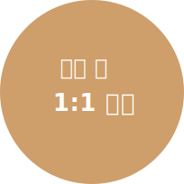
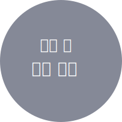
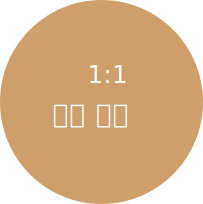

고객님의 안전을 위해 전문 인력, 설비,시스템 등에 아낌없이 투자하며
수술 집도의와 마취통증의학과 전문의 사이의 뛰어난 호흡을 통해
안전의 1원칙인 수술의 항상성을 유지 합니다.
안전의 1원칙
수술의 항상성
수술의 항상성이란?
환자의 상태와 수술 진행 모드 안정적으로 유지되는것
PLASTIC SURGEON'S 1:1 CUSTOMIZED TREATMENT
성형외과 전문의 1:1 맞춤 진료
다년간의 임상경험과 노하우를 지닌 성형외과 전문의로 이루어진 KB.PS는
수술 전, 수술 중, 수술 후까지 담당 의료진의 손으로 직접 이루어 집니다.
- 
- 
- 
A FIRM SAFETY MAVUAL
확고한 안전 매뉴얼
-
환자 중심 주의
KB.PS -
전 의료진은
환자 중심의 안전 매뉴얼을
확실히 숙지하여
어떠한 위기 상황에서도
신속한 대처가 가능합니다.
-
감염 안심존
KB.PS -
환자의 안전을
최우선으로 생각한
수술실 환경을 조성하여
감염 걱정을 줄인
안전한 수술이 가능합니다.
-
과잉 진료 없는
KB.PS -
이익만을 위한
과잉 진료가 아닌
환자의 안전을
최우선으로 하여
양심 있는 진료를 진행합니다.
- 부산광역시 해운대구 좌동
- 의료기관명 : 케이비성형외과의원
- 대표자 : 김사부
- 사업자 등록번호 : 123-45-67891
- E-MAI : kbps.com
- Tel : 1544-1234, 051-123-4567~8
- Fax : 051-123-4569
Copyright  2016 KBPLASTIC SURGERY, ALL
right reserved.
2016 KBPLASTIC SURGERY, ALL
right reserved.